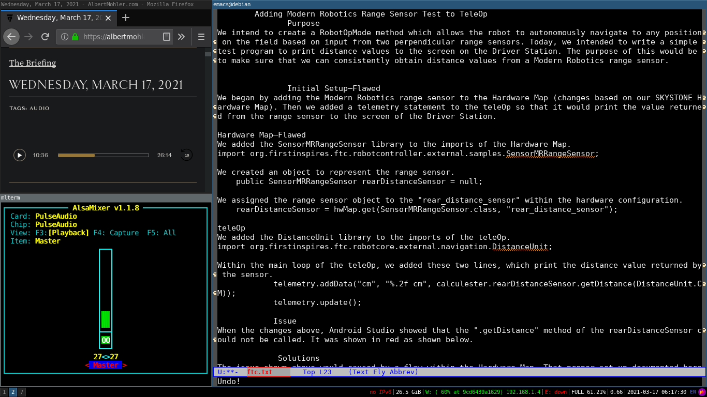
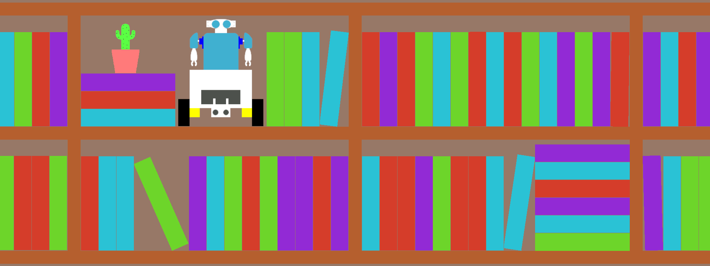
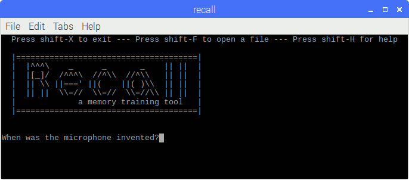
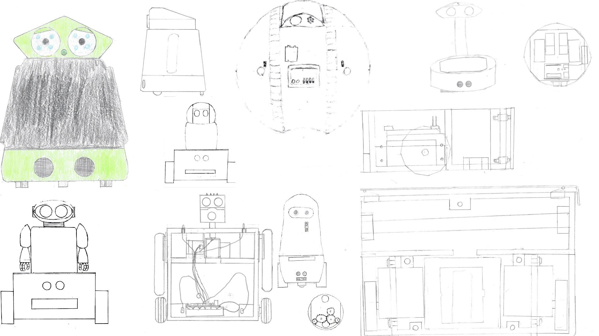

More
My Operating Systems
My primary operating systems, for year to year, are documented here.
Click For More
My Books
Here are all of my books. No, I am not sure why this might be of interest to you.
Click For More
GDB
Documentation for the GNU Debugger
Click For More
The Official Hyper-abridged Dictionary
Building a dictionary one word at a time.
Click For More
Computer User Profile Code
<---COM_U_PROF_CODE---Version[Alpha]---E[] F[] L[] O[] P[] C[] S[] H[]>
Computer User Profile Code is a way of conveying digital preferences and abilities through a terse string of characters. A web based generator is provided so that anyone can create a code containing their own profile, and a web based parser is provided so that anyone can interpret someone else's code.
Click For More
Recall - A Linux Study Tool
Recall is a study tool that uses active recall to aid memorization.
Click For More
Various and Sundry Sketches and Designs
Click here to see a page of various random sketches and designs. Some of them were eventually built, and others were almost completely forgotten.
Click For More